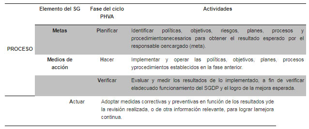

Parámetros de Autorregulación en materia de Protección de Datos Personales.
Capítulo I
Disposiciones comunes
Sección I
De los Parámetros
Objeto
1. Los presentes
Parámetros tienen por objeto establecer reglas, criterios y procedimientos para
el correcto desarrollo e implementación de los esquemas de autorregulación
vinculante en materia de protección de datos personales, a los que se
refieren los artículos 44 de la Ley Federal de Protección de
Datos Personales en Posesión de los Particulares, y 79, 80, 81, 82, 83,
84, 85 y 86 de su Reglamento.
Ámbito de aplicación
2. Los presentes
Parámetros son de observancia obligatoria en toda la República Mexicana para
la validación y reconocimiento de los esquemas de autorregulación
vinculante en materia de protección de datos personales en posesión de
particulares, por parte del Instituto Federal de Acceso a la Información
y Protección de Datos.
Supletoriedad
3. A falta de
disposición expresa en los presentes Parámetros sobre los trámites o
procedimientos frente al Instituto Federal de Acceso a la Información y
Protección de Datos relacionados con esquemas de autorregulación
vinculante, se aplicarán de manera supletoria las disposiciones de la Ley
Federal de Procedimiento Administrativo.
A falta de disposición expresa en los presentes Parámetros con relación
a los procedimientos de acreditación o certificación, se aplicarán de
manera supletoria los procedimientos previstos por la Ley Federal sobre
Metrología y Normalización en lo que aplique y la normativa que de ella se
derive.
Definiciones
4. Adicionalmente a
las definiciones previstas en los artículos 3 de la Ley Federal de Protección
de Datos Personales en Posesión de los Particulares y 2 de su Reglamento,
para los efectos de los presentes Parámetros se entenderá por:
I. Adherido:
Responsable o encargado que, de manera voluntaria, se obliga a observar un
esquema de autorregulación vinculante;
II. Alta dirección: Toda
persona con poder legal de toma de decisión en las políticas del responsable
o encargado, por ejemplo, la junta directiva, los socios de un
responsable o encargado persona moral, el dueño de una empresa unipersonal
o quien encabeza la estructura del responsable o encargado;
III. Auditoría: Proceso
sistemático, independiente y documentado para obtener evidencias y evaluarlas
de manera objetiva para determinar el grado de cumplimiento de los
criterios preestablecidos para dicha auditoría;
IV. Esquema de
autorregulación vinculante o esquema: Conjunto de principios, normas y
procedimientos, de adopción voluntaria y cumplimiento vinculante, que
tiene como finalidad regular el comportamiento de los responsables y
encargados respecto a los tratamientos de datos personales que lleven a cabo;
V. Mecanismos
alternativos de solución de controversias: Procedimientos voluntarios, basados
en la satisfacción de las partes y la buena fe, tales como la negociación,
la mediación y la conciliación que, como alternativa paralela al sistema
de administración de justicia, permiten a los adheridos resolver las controversias
que se susciten con los titulares a través del nombramiento e intervención de
un tercero imparcial;
VI. No conformidad:
Incumplimiento de un requisito previsto en el esquema de autorregulación
vinculante;
VII. Parámetros:
Parámetros de Autorregulación en materia de Protección de Datos Personales;
VIII. Política: Política
de gestión de datos personales;
IX. Registro: Registro
de Esquemas de Autorregulación Vinculante;
X. Procedimiento:
Grupo de acciones documentadas que establecen la manera oficial o aceptada
para llevar a cabo determinada actividad;
XI. Reglas de
Operación: Reglas de Operación del Registro, instrumento que emite el
Instituto y cuyo objeto es definir y describir los aspectos operativos y
los procedimientos necesarios para el funcionamiento del Registro;
XII. Revisión: Actividad
estructurada, objetiva y documentada, llevada a cabo con la finalidad de
constatar el cumplimiento continuo de los contenidos establecidos en los
esquemas de autorregulación vinculante, incluida la certificación;
XIII. Riesgo: Combinación
de la probabilidad de un evento y su consecuencia desfavorable;
XIV. Sistema de gestión
de datos personales o SGDP: Sistema de gestión general para establecer, implementar,
operar, monitorear, revisar, mantener y mejorar el tratamiento y seguridad de
los datos personales en función del riesgo de los activos y de los
principios, deberes y obligaciones previstos en la Ley, demás normativa
aplicable y buenas prácticas en materia de protección de datos personales, y
XV. Sistema de Gestión:
Conjunto de elementos y actividades interrelacionadas para establecer metas
y los medios de acción para alcanzarlas.
Definiciones para el sistema de certificación en materia de datos
personales
5. Para efectos del
Capítulo III de los presentes Parámetros, se entenderá por:
I. Acreditación: Acto
por el cual una entidad de acreditación aprobada en términos de la Ley Federal
sobre Metrología y Normalización, reconoce la competencia técnica y
confiabilidad de organismos de certificación para la evaluación de la
conformidad de la Ley, el Reglamento, los presentes Parámetros y demás
normativa aplicable;
II. Certificación:
Procedimiento llevado a cabo por un organismo de certificación por el cual
se asegura que un esquema y su implementación se ajustan a la Ley, el
Reglamento, los presentes Parámetros y demás normativa en materia de
protección de datos personales en posesión de particulares;
III. Certificado:
Documento expedido por un organismo de certificación acreditado, mediante el
cual se hace constar la certificación en materia de protección de datos
personales otorgada a un responsable o encargado en específico. En él se
encuentran descritos los alcances de dicha certificación;
IV. Entidad de
acreditación: Persona moral autorizada por la Secretaría de Economía, de
conformidad con la Ley Federal sobre Metrología y Normalización, para
acreditar organismos de certificación en materia de protección de datos
personales;
V. Ley sobre
Metrología: Ley Federal sobre Metrología y Normalización, y
V. Organismo de
certificación: persona que tiene por objeto realizar funciones de certificación
en materia de protección de datos personales.
Alcances de la autorregulación vinculante
6. Los esquemas de autorregulación
vinculante podrán incluir principios, normas y procedimientos para adecuar
y armonizar las disposiciones previstas en la Ley, su Reglamento y demás
normativa aplicable, a la realidad de sectores específicos, y abordar
problemáticas o situaciones particulares que no fueron previstas por la
norma general, a fin de hacer eficiente la protección de datos personales en
las actividades que se autorregulen.
Asimismo, la autorregulación vinculante permitirá elevar los estándares
de protección de datos personales, a través de la adopción de las mejores
prácticas en la materia, tanto nacionales como internacionales.
Carácter vinculante de la autorregulación
7. La adhesión a los
esquemas de autorregulación vinculante por parte de un responsable o encargado
es de carácter voluntario. No obstante, el cumplimiento de dichos esquemas
será obligatorio para quienes se adhieran a los mismos, por lo que éstos
deberán prever sanciones por su incumplimiento.
Principios de la autorregulación vinculante
8. La autorregulación
vinculante en materia de protección de datos personales se regirá por los
siguientes principios:
I. Voluntariedad: La
adhesión o adopción de los esquemas de autorregulación vinculante será de
manera libre sin que medie vicio alguno en el consentimiento;
II. Obligatoriedad: El
esquema de autorregulación vinculante constriñe a quien se adhiere al mismo o
lo adopta;
III. Transparencia: Las
prácticas en materia de protección de datos personales serán transparentes,
salvo aquella información que se especifique como confidencial o
reservada, siempre que exista el derecho a clasificarla de conformidad con
las disposiciones aplicables;
IV. Responsabilidad: El
responsable tiene la obligación de velar por el cumplimiento de los principios
de protección de datos personales previstos por la Ley, con relación a los
datos personales que posee o que haya comunicado a un tercero o encargado,
ya sea que éste se encuentre o no en territorio nacional, para lo cual
deberá adoptar las medidas necesarias, y
V. Imparcialidad: Los
esquemas de autorregulación vinculante deben organizarse e implementarse
de forma que se salvaguarden la objetividad e imparcialidad de sus
actividades.
Clases de esquemas de autorregulación vinculante
9. La autorregulación
vinculante en materia de protección de datos personales puede ser de tres
clases:
I. Las reglas emitidas
con objeto de adaptar la normativa aplicable en materia de protección de
datos personales a la realidad y actividades de un sector en particular, a
fin de hacer eficiente la aplicación del derecho a su protección;
II. Los esquemas de
autorregulación vinculante evaluados y validados por el Instituto cuando
satisfagan todos los requisitos previstos para ello, denominados esquemas
con validación, que tendrán por objeto elevar los estándares de protección
de datos personales y adoptar las mejores prácticas en la materia, y
III. Los esquemas de
autorregulación vinculante certificados por un organismo de certificación en
materia de protección de datos personales, que serán reconocidos por el
Instituto a través de su inscripción en el Registro, denominados esquemas
con certificación reconocida, que también tendrán por objeto elevar
los estándares de protección de datos personales y adoptar las mejores
prácticas en la materia.
Obligación de la notificación
10. En términos del
último párrafo del artículo 44 de la Ley, los esquemas de autorregulación
vinculante deberán ser notificados al Instituto y a las autoridades
sectoriales correspondientes, tales como aquellas dependencias o entidades
de la Administración Pública Federal vinculadas con el sector dentro del cual
se realiza el tratamiento de datos personales afectados por el esquema de
autorregulación en cuestión.
Para la notificación de los esquemas de autorregulación vinculante al
Instituto, se estará a lo dispuesto en los presentes Parámetros y en las
Reglas de Operación del Registro que emita el Instituto.
Con relación a la notificación de los esquemas de autorregulación
vinculante a las autoridades sectoriales competentes, se deberán
considerar las materias, ramas o sectores que estén relacionados con el
tratamiento de datos personales que regule el esquema en cuestión.
El objeto de la notificación a autoridades sectoriales es hacer de su
conocimiento la existencia, modificación o baja de un esquema de
autorregulación vinculante, con la finalidad de que dicha autoridad actúe
en ejercicio de sus atribuciones. Dicha notificación podrá realizarse en las
oficinas de la autoridad sectorial correspondiente o a través de cualquier
medio que sea establecido para ello.
La notificación a las autoridades sectoriales competentes se deberá
hacer del conocimiento del Instituto.
De los incentivos de la autorregulación vinculante
11. De conformidad con
el artículo 81 del Reglamento, la adopción y cumplimiento de un
esquema de autorregulación vinculante inscrito en el Registro, será
considerado por dicha autoridad para determinar la atenuación de la
sanción que corresponda, en caso de verificarse algún incumplimiento a lo
dispuesto por la Ley y el Reglamento.
De manera adicional, la adecuada implementación de un esquema de
autorregulación vinculante será útil para los siguientes fines:
I. Mejorar la
reputación del responsable o encargado frente a los titulares y la autoridad;
II. Contar con un
sistema que permita documentar el cumplimiento de la normativa en materia
de protección de datos personales;
III. Demostrar ante la
autoridad y los titulares el compromiso y responsabilidad con la protección de
los datos personales;
IV. Facilitar las
transferencias de los datos personales, y
V. Establecer
mecanismos alternativos de solución de controversias.
El Instituto podrá determinar incentivos adicionales para la adopción de
esquemas de autorregulación vinculante.
Opinión o recomendación de autoridades sectoriales
12. En caso de
requerirla, el Instituto podrá solicitar la opinión o información de alguna
autoridad sectorial para:
I. Analizar y, en su
caso, proponer reglas o mejores prácticas para adaptar la normativa en materia
de protección de datos personales a un sector o actividad específico;
II. Evaluar la
procedencia de la validación, modificación o baja de un esquema de autorregulación vinculante,
y
III. Coadyuvar con la
Secretaría en la vigilancia del sistema de certificación en materia de
protección de datos personales.
Sección II
De los requisitos y contenidos mínimos de los esquemas con validación y
los esquemas con
certificación reconocida
Alcance de los esquemas con validación y los esquemas con certificación
reconocida
13. Los esquemas con
validación y los esquemas con certificación reconocida podrán tener cualquiera
de los siguientes alcances:
I. Total: cuando se
establezcan con relación a todos (i) los principios, (ii) deberes y (iii)
obligaciones previstas por la Ley, el Reglamento, los presentes Parámetros
y demás normativa aplicable en la materia, o
II. Parcial: cuando se
establezcan con relación a principios, deberes u obligaciones específicos
previstos en la Ley, su Reglamento, los presentes Parámetros y demás
normativa aplicable en la materia.
A su vez, los esquemas totales o parciales podrán regular todos o sólo
algunos de los tratamientos de datos personales que realice un responsable
o encargado, o realicen un grupo de responsables o encargados.
El Instituto, a través de la inscripción en el Registro y la validación
que emita, deberá identificar plenamente el alcance específico del
esquema, con objeto de que sea posible reconocer de manera clara si éste
es total o parcial, y en este último caso qué principio, deber u obligación en
particular abarca, así como el o los tratamientos regulados por el mismo.
Los esquemas también podrán complementarse con estándares y mejores
prácticas que de manera adicional se decidan adoptar.
Contenidos mínimos
14. Para que un esquema sea validado
por el Instituto o cuente con una certificación reconocida por
el Instituto deberá, al menos:
I. Señalar su
denominación;
II. Señalar el nombre
completo, denominación o razón social de los responsables o encargados
adheridos al esquema;
III. Especificar el
sector o la actividad a la que aplica;
IV. Describir el
alcance del esquema en cuestión, de acuerdo con el numeral anterior;
V. Describir el ámbito
personal de aplicación, es decir, el tipo o grupo de titulares cuyos datos
personales están vinculados con el tratamiento al que aplica el esquema de
autorregulación;
VI. Desarrollar e
implementar un SGDP;
VII. Documentarse y
desarrollarse en idioma español, y
VIII. Proporcionar datos
de contacto o un medio habilitado para que los interesados conozcan más
acerca del esquema.
Objetivo del SGDP para la protección de los datos personales
15. El SGDP al que refiere la
fracción VI del numeral anterior tendrá como objetivo proveer a
los responsables y encargados autorregulados de los elementos y
actividades de dirección, operación y control de sus procesos, que les
permitan proteger de manera sistemática y continua los datos personales que
estén en su posesión.
Fases del SGDP
16. El SGDP deberá desarrollar las
siguientes cuatro fases: planificar, hacer, verificar y actuar, de
acuerdo con lo descrito en la tabla siguiente:

Los aspectos relacionados con la planeación y desarrollo del SGDP se
describen en los numerales 17 a 23 de los presentes Parámetros.
Definir los alcances y objetivos del SGDP
17. El responsable o encargado
deberá definir el alcance del SGDP y establecer objetivos en materia
de protección de datos personales.
El SGDP podrá abarcar todos los principios, deberes y obligaciones
previstas por la Ley, el Reglamento y demás normativa aplicable, o sólo
algunos de ellos dependiendo del alcance del esquema de autorregulación vinculante
del cual forme parte.
Elaborar una política de gestión de datos personales
18. El responsable o encargado
deberá elaborar una política de gestión de datos personales, en la que
se describa, al menos:
I. Los tratamientos a
los que aplica;
II. Las acciones a
realizar para el cumplimiento de los principios, deberes y obligaciones
establecidos en la Ley, su Reglamento y demás normativa que resulte
aplicable. En el caso de esquemas parciales, se deberá incluir lo que
corresponda al principio, deber u obligación aplicable;
III. Las acciones a
realizar para el desarrollo, implementación, mantenimiento y mejora continua
del SGDP, y
IV. Las buenas
prácticas que se decidan adoptar, en su caso.
Esta política deberá ser comunicada a todos los miembros que participen
con el responsable o el encargado.
Lograr el apoyo de la alta dirección
19. El responsable o encargado deberá
asegurar que la alta dirección apoye la política de gestión de
datos personales, a fin de garantizar el compromiso del responsable o
encargado con el SGDP.
Designar al responsable del SGDP
20. El responsable o encargado
deberá designar a un miembro de la alta dirección para
planear, implementar y desarrollar el SGDP. Entre las responsabilidades de
esta persona estarán, al menos:
I. Coordinar la
elaboración del SGDP y de la política de gestión de datos personales;
II. Realizar las
gestiones necesarias para la aprobación del SGDP y de la política por parte de
la alta dirección, y
III. Realizar las acciones
necesarias para asegurar la implementación y cumplimiento del SGDP y de
la política.
Asignar funciones y responsabilidades
21. El responsable o encargado
deberá designar el personal que considere necesario para estar a cargo del
cumplimiento cotidiano del SGDP y de la política de gestión de datos
personales. Este personal tendrá, al menos, las siguientes funciones y
responsabilidades:
I. Participar en la
elaboración del SGDP y la política, para su aprobación por parte de la alta
dirección;
II. Vigilar la
implementación del SGDP y la política de manera cotidiana en el responsable o
encargado;
III. Realizar revisiones
administrativas y auditorías del SGDP y de la política para que reflejen
las actualizaciones normativas, de práctica y tecnológicas;
IV. Estar a cargo de la
definición e implementación del programa de fomento de la protección de
datos personales al interior del responsable o encargado, incluyendo la
capacitación y sensibilización sobre el SGDP y la política;
V. Coordinarse con el
personal encargado del cumplimiento normativo, la gestión del riesgo y de
los aspectos de seguridad al interior del responsable o encargado;
VI. Brindar asesoría
técnica en materia de protección de datos personales y en la realización de proyectos relacionados
dentro del responsable o encargado;
VII. Realizar y
administrar las notificaciones requeridas al Instituto y a otras autoridades,
de conformidad con lo previsto en la Ley, su Reglamento y demás normativa
aplicable, incluyendo las relacionadas con la existencia, modificaciones y
baja de los esquemas;
VIII. Realizar y
administrar las comunicaciones requeridas a los interesados en relación con el
SGDP, la política y los esquemas, incluidas las modificaciones relevantes
a los mismos;
IX. Atender los
requerimientos realizados por el Instituto y las autoridades sectoriales
competentes, y
X. Considerar en el
desarrollo del SGDP, la regulación y buenas prácticas sectoriales que existan
en la materia.
El personal al que refiere este parámetro podrá incluir empleados
permanentes y temporales, proveedores externos, consultores y asesores del
responsable o encargado.
Asignar recursos
22. El responsable o encargado
deberá determinar y asignar los recursos materiales, financieros y humanos
necesarios para establecer, implementar, operar, mantener y mejorar el SGDP.
Fomentar una cultura de protección de datos personales en el responsable
o encargado.
23. Para asegurar que la debida
gestión de datos personales sea parte de los valores centrales
del responsable o encargado, éste deberá:
I. Proporcionar a sus
miembros capacitación continua y programas de sensibilización con relación a
la protección de los datos personales y el SGDP;
II. Establecer un
proceso para la evaluación de la efectividad de la capacitación y los programas
de sensibilización;
III. Comunicar a todo el
personal la importancia de:
a) Alcanzar los objetivos del SGPD;
b) Cumplir con la política de gestión de datos
personales, y
c) Actualizar la política de gestión de datos
personales y el SGDP;
IV. Asegurar que todos
sus miembros estén sensibilizados de su contribución para alcanzar los
objetivos del SGPD y las consecuencias de las no conformidades, y
V. Prever mecanismos
de reporte de asuntos relevantes a los niveles superiores.
Elaborar un inventario de datos personales
24. El responsable o encargado
deberá elaborar, y mantener actualizado, un inventario de los
datos personales que trate, o de sus categorías, y de las finalidades de
su tratamiento. Asimismo, se deberá documentar el flujo de los datos
personales dentro del responsable o encargado, incluyendo la obtención,
uso, divulgación, transferencias, almacenamiento, bloqueo y cancelación, e
identificando las áreas del responsable o encargado que utilizan los datos
personales en las distintas fases del tratamiento.
Realizar análisis de riesgos
25. El responsable o encargado
deberá implementar un procedimiento para identificar riesgos y evaluar
el grado de riesgo asociado a cada tratamiento de datos personales que
realiza por sí mismo o a través de un encargado, de conformidad con lo que
establece el Capítulo III del Reglamento y las Recomendaciones en materia
de Seguridad de Datos Personales emitidas por el Instituto.
El responsable o encargado deberá gestionar los riesgos identificados
para mitigar la posibilidad de cualquier vulneración a los datos
personales.
Capacitar al personal encargado
26. El responsable o encargado
deberá asegurar que el personal designado para estar a cargo del cumplimiento
cotidiano del SGDP y la política tenga competencia en el conocimiento de la
Ley, su Reglamento y demás normativa y buenas prácticas aplicables, así
como que dicho personal se mantenga informado y actualizado sobre
cuestiones relacionadas con el tratamiento de datos personales.
Asimismo, el responsable o encargado deberá asegurarse de que este
personal entienda sus funciones y responsabilidades para que los datos
personales sean tratados de conformidad con los
procedimientos preestablecidos.
Para lo anterior, este personal deberá recibir la capacitación que
resulte necesaria para la debida realización de sus funciones.
Desarrollar e implementar procedimientos específicos en materia de datos
personales
27. El responsable o
encargado deberá desarrollar e implementar procedimientos específicos para:
I. El tratamiento de
datos personales bajo los principios de licitud, consentimiento, información,
calidad, finalidad, lealtad, proporcionalidad y responsabilidad, previstos
en la Ley, su Reglamento y demás normativa aplicable;
II. El tratamiento de
datos personales bajo los deberes de seguridad y confidencialidad, previstos
por la Ley, su Reglamento y de demás normativa aplicable;
III. El cumplimiento de
las obligaciones en materia de protección de datos personales previstas por la
Ley, su Reglamento y demás normativa aplicable;
IV. La atención de los
derechos de acceso, rectificación, cancelación y oposición, así como la
revocación del consentimiento, de conformidad con lo previsto por la Ley,
su Reglamento y demás normativa y buenas prácticas aplicables;
V. La atención a
quejas relacionadas con el tratamiento de datos personales;
VI. La transferencia de
datos personales de conformidad con lo previsto por la Ley, su Reglamento
y demás normativa y buenas prácticas aplicables;
VII. La regulación de la
relación con los encargados, de conformidad con lo previsto por la Ley,
su Reglamentos y demás normativa y buenas prácticas aplicables;
VIII. El adecuado
tratamiento de datos personales de categorías especiales de titulares, tales
como menores de edad, personas adultas mayores, personas con discapacidad,
migrantes, y
IX. El desarrollo,
implementación, mantenimiento y mejora continua del SGDP.
En caso de que el SGDP se limite a algún principio, deber u obligación
en particular, dicho SGDP deberá prever y operar procedimientos
específicos relacionados con dicho principio, deber u obligación y para
el desarrollo, implementación, mantenimiento y mejora continua del propio
SGDP.
Los procedimientos a los que refiere este numeral serán desarrollados
por el personal al que refiere el numeral 21 de los presentes Parámetros,
en coordinación con las áreas competentes.
Actualizar el SGDP
28. El personal al que refiere el
numeral 21 de los presentes Parámetros deberá revisar y evaluar de manera
periódica si el SGDP y la política logran los objetivos planteados con relación
al cumplimiento de la Ley, su Reglamento y demás normativa y buenas
prácticas aplicables. En caso de que no se logren dichos objetivos o en
atención a cambios en la normativa, la tecnología o cualquier otro que resulte
relevante, se deberán realizar las modificaciones y actualizaciones
necesarias al SGDP y a la política.
Planear, implementar y mantener un programa de auditoría
29. El SGPD deberá contemplar la
planeación, implementación y mantenimiento de un programa de auditorías
para monitorear y revisar la conformidad de los tratamientos de datos
personales realizados por el responsable o encargado, incluidos aquéllos
efectuados por encargados, con relación a la política de gestión de datos
personales.
Seleccionar los auditores
30. El responsable o encargado
deberá asegurar la objetividad y la imparcialidad del programa
de auditorías, mediante la adecuada selección de auditores y la debida
realización de éstas.
Requerimientos de auditoría
31. Las auditorías deberán
realizarse en los intervalos planeados de al menos un año para determinar si
el SGDP está operando, se implementa y se mantiene de conformidad con la
política, requerimientos y procedimientos establecidos.
Deberán presentarse reportes de auditoría que detallen cualquier no
conformidad con la política de gestión de datos personales, que incluyan,
cuando sea posible, cifras, indicadores y estadísticas relacionadas con
los procedimientos puestos en operación y recomendaciones necesarias a fin
de hacer más efectivo y eficiente el cumplimiento de la política y el
SGDP. Dichos reportes deberán identificar asuntos relacionados con
la tecnología o procesos que pudieran afectar el cumplimiento de la
política.
Planear, implementar y mantener revisión administrativa
32. El responsable o encargado
deberá prever, implementar y mantener revisiones administrativas regulares
y programadas, para asegurar un adecuado desarrollo continuo y la efectividad
del SGDP. También deberán preverse revisiones administrativas cuando se
lleven a cabo cambios que afecten aspectos significativos del SGDP, tales
como cambios en la normativa aplicable, en la tecnología o en los valores
y procedimientos del responsable o encargado.
Las revisiones administrativas deberán basarse en:
I. La
retroalimentación por parte de los usuarios del SGDP;
II. Los riesgos
identificados en el análisis de riesgos;
III. Los resultados de
auditorías;
IV. Los resultados de
las revisiones;
V. Las actualizaciones
o cambios en la tecnología utilizada por el responsable o encargado;
VI. Los requerimientos
por parte de autoridades;
VII. El manejo de
quejas, y
VIII. Las vulneraciones
de seguridad.
Estas revisiones administrativas deberán ser documentadas.
Aplicar acciones preventivas y correctivas
33. El responsable o encargado
deberá mejorar el SGDP mediante la aplicación de acciones preventivas
y correctivas.
Todos los cambios propuestos al SGDP o la política deberán ser evaluados
por el personal previsto en el numeral 21 de los presentes Parámetros,
previa su implementación, para asegurar su conformidad con la Ley, su
Reglamento y demás normativa y buenas prácticas aplicables.
Los cambios derivados de las acciones preventivas y correctivas deberán
documentarse y conservarse de conformidad con los periodos establecidos
para ello.
Implementar acciones
preventivas
34. El responsable o encargado
deberá implementar acciones preventivas para evitar cualquier
no conformidad, considerando lo siguiente:
I. Determinar e
implementar dichas acciones según sean requeridas;
II. Conservar los
resultados y las revisiones de las acciones implementadas;
III. Identificar
posibilidades de cambio que pudieren dar lugar a una no conformidad por parte
del responsable o encargado, y
IV. Asegurar que
aquéllos que requieran conocer sobre las potenciales no conformidades y las
acciones preventivas implementadas tengan el conocimiento necesario sobre
las mismas.
Implementar acciones correctivas
35. Cuando tenga lugar una no
conformidad, el responsable o encargado deberá establecer procedimientos
para revisar dicha no conformidad y deberá:
I. Eliminar la causa
de la no conformidad;
II. Reducir el grado de
la no conformidad, o
III. Documentar la
situación a detalle, cuando se determine que la reducción en el grado de la
no conformidad no puede garantizarse.
El responsable o encargado deberá prever un procedimiento y un plazo
límite para corregir las no conformidades identificadas.
El responsable o encargado deberá asegurar que cualquier nuevo riesgo
identificado para los datos personales es evaluado con procesos
proactivos, tales como las evaluaciones de impacto a la privacidad.
Sanciones
36. Cuando una no
conformidad no haya sido corregida en los plazos establecidos para ello,
el responsable o encargado deberá prever sanciones que corresponda aplicar
a los causantes de dicha no conformidad. Las sanciones podrán consistir en
amonestaciones, sanciones económicas o suspensiones temporales o
definitivas de la adhesión, entre otras.
Los esquemas de autorregulación vinculante podrán prever que las
sanciones efectuadas se hagan públicas.
Todas las sanciones deberán notificarse al adherido, cuando se trate de
un esquema que aplique a un grupo de responsables o encargados.
Mejora continua
37. El responsable o encargado
deberá mejorar continuamente la efectividad del SGDP considerando
los resultados de las auditorías, acciones preventivas y correctivas, así
como de las revisiones administrativas.
Las quejas, vulneraciones de seguridad, solicitudes de acceso, entre
otros, podrán ser elementos considerados para la mejora de la efectividad
del SGDP.
Sección III
De los requisitos y contenidos potestativos de los esquemas con
validación y de los esquemas con
certificación reconocida
Contenidos potestativos
38. Todo esquema que desee ser
validado o contar con una certificación reconocida por el Instituto
podrá incluir cualquier contenido adicional a lo previsto por el numeral
14 de los presentes Parámetros, para un mejor cumplimiento de la Ley, su
Reglamento y demás normativa y buenas prácticas que resulten
aplicables, tales como:
I. Mecanismos
alternativos de solución de controversias;
II. Algún distintivo
que identifique a responsables o encargados adheridos a esquemas con validación
o certificación reconocida, adicional al que el Instituto pudiere prever
como consecuencia del reconocimiento o validación correspondiente, para lo
cual se deberán desarrollar las características y reglas de uso de
dicho distintivo, o
III. Disposiciones
relativas al alcance y vinculación internacional del esquema.
Mecanismos alternativos de solución de controversias
39. El administrador
del esquema o cualquier otra persona para ello designada podrá invitar a
los adheridos y titulares a resolver las controversias que se susciten a
través de mecanismos alternativos de solución de controversias, siempre
que el titular y el responsable involucrados así lo consientan. Tanto
el responsable como el titular afectado podrán sugerir la adopción de
algún mecanismo alternativo de solución de controversias.
La implementación de los mecanismos alternativos de solución de
controversias deberá llevarse a cabo con la intervención de un tercero
imparcial, quien podrá ser un experto independiente contratado para
tales fines; y de conformidad con el procedimiento propuesto en el
mecanismo de autorregulación vinculante; aquél que libremente acuerden las
partes o, en su defecto, por las leyes federales o locales aplicables en la
materia.
Las decisiones adoptadas en el mecanismo alternativo de solución de
controversias deberán ser notificadas a las partes.
Con independencia de que las partes decidan someter sus diferencias a un
mecanismo alternativo de solución de controversias, quedan a salvo sus
derechos para ejercitar las acciones que, en términos de las disposiciones
normativas aplicables, resulten procedentes.
En específico, la decisión de someter sus diferencias a un mecanismo
alternativo de solución de controversias no impide al titular para iniciar
el procedimiento de protección de derechos previsto en el Capítulo VII de
la Ley y VIII del Reglamento, y no interrumpe el plazo previsto por la Ley para
iniciarlo.
El conciliador, mediador o cualquier otro tercero imparcial que
intervenga en el procedimiento deberá informar al titular del derecho que
le asiste para iniciar el procedimiento señalado en el párrafo anterior y
el plazo que tiene para ello, precisando que el mismo no se interrumpe si
se opta por un mecanismo alternativo de solución de controversias.
Principios de los mecanismos alternativos de solución de controversias
40. En todo caso, los
procedimientos de negociación, mediación, conciliación o cualquier otro
adoptado dentro de un esquema de autorregulación vinculante deberán
cumplir con los siguientes principios:
I. Accesibilidad: Los
mecanismos alternativos de solución de controversias deberán estar disponibles
a los titulares de los datos personales, promoviendo el conocimiento sobre
su existencia, su funcionamiento, costo, si lo hubiere, y las ventajas que
implica su adopción;
II. Imparcialidad: El
tercero que implementará el mecanismo alternativo de solución de
controversias actuará con autonomía y tratará a las partes con absoluta
objetividad, sin que su intervención se incline hacia alguna de ellas o a
sus intereses;
III. Voluntariedad: Las
partes cuentan con plena libertad para decidir si someten sus diferencias a
los mecanismos alternativos de solución de controversias;
IV. Confidencialidad:
Las actuaciones llevadas a cabo dentro de los mecanismos alternativos de
solución de controversias deben ser reservadas o confidenciales, y no
podrán ser divulgadas por el mediador o conciliador, salvo acuerdo
contrario de las partes o que por disposición normativa no pueda
atribuírseles dicha naturaleza;
V. Economía: El
procedimiento debe implicar el mínimo de gastos y tiempo para su desahogo,
logrando el arreglo entre las partes;
VI. Claridad: El
tercero imparcial debe procurar que el acuerdo al que lleguen las partes sea
comprendido por éstos;
VII. Honestidad: El
tercero imparcial debe excusarse de participar en una mediación o conciliación,
o dar por terminada la misma si, a su juicio, cree que tal acción sería a
favor de los intereses de las partes, y
VIII. Legalidad: El
mecanismo alternativo de solución de controversias no podrá contravenir
disposición normativa alguna.
Distintivos oficiales y marcas
41. El Instituto podrá establecer
características y reglas de uso de los distintivos oficiales que denoten
el reconocimiento o la validación de los esquemas.
Cuando algún esquema con validación o certificación reconocida prevea
algún distintivo que identifique a responsables o encargados adheridos al
mismo, se deberán establecer las características y reglas de uso de dicho
distintivo.
Capítulo II
De las reglas para adaptar la normativa o buenas prácticas
Reglas emitidas por los sujetos obligados o buenas prácticas
42. Los sujetos
obligados por la Ley podrán elaborar reglas específicas o buenas prácticas
desde la autorregulación, a fin de complementar lo dispuesto por la Ley,
su Reglamento y demás disposiciones aplicables, con objeto de abordar
situaciones o problemáticas particulares de sectores específicos, que
no hayan sido previstas en el carácter general de la normativa.
Los aspectos relacionados con el desarrollo, la notificación, los
trámites e inscripción en el Registro de las reglas para adoptar la normativa
o buenas prácticas serán fijados de forma conjunta por el Instituto y
otros interesados.
Reglas emitidas por el Instituto y los sujetos obligados
43. El Instituto podrá proponer a
los sujetos obligados de la Ley, la adopción de las reglas o buenas prácticas
a las que refiere este capítulo, cuando considere que la autorregulación
vinculante ayudará a mejorar la eficiencia de la aplicación de la
normativa, así como el ejercicio del derecho a la protección de datos
personales.
Asimismo, el Instituto, los sujetos regulados por la Ley y otros
sectores interesados podrán elaborar de manera conjunta estas reglas o
buenas prácticas, para lo cual fijarán los términos de coordinación
que consideren pertinentes.
Obligación del cumplimiento de la norma
44. Estas reglas o buenas prácticas
no eximen a los responsables ni encargados de su obligación de cumplir con
lo dispuesto por la Ley, su Reglamento y demás normativa aplicable en materia
de protección de datos personales, sino que facilitarán el cumplimiento
de esas disposiciones.
Capítulo III
De los esquemas con validación o que busquen la validación del Instituto
Sección I
Disposiciones generales
Esquemas con validación
45. De acuerdo con la
fracción II del numeral 9 de los presentes Parámetros, los esquemas con
validación tienen por objeto elevar los estándares de protección de datos
personales previstos en la Ley y demás normativa aplicable en la materia,
así como adoptar las mejores prácticas en la materia.
Contenidos mínimos de esquemas aplicables a grupos de responsables o
encargados
46. En caso de que el esquema con
validación sea aplicable a un grupo de responsables o encargados, éste
deberá, además de lo previsto en el numeral 14 de los presentes Parámetros:
I. Describir los
requisitos y el procedimiento de adhesión al esquema y de renovación y
terminación de dicha adhesión;
II. Contar con un
administrador;
III. Prever sanciones o
medidas correctivas en caso de no conformidades por parte de los adheridos, y
IV. Describir los
medios por los cuales se comunicará a los interesados cualquier aspecto
relacionado con dicho esquema, incluidos las modificaciones del mismo.
Administrador del esquema
47. El administrador es
la persona física o moral que coordina el desarrollo de esquemas aplicables a
un grupo de responsables o encargados, para lo cual deberá:
I. Ser imparcial y
evitar conflicto de intereses en el desempeño de sus funciones;
II. Realizar las
gestiones necesarias para notificar ante el Instituto el esquema aplicable al
grupo de responsables o encargados y solicitar su inscripción en el
Registro, así como notificar las modificaciones o solicitar la baja
respectiva;
III. Hacer del
conocimiento de los adheridos cualquier cambio que afecte al esquema de
autorregulación vinculante;
IV. Realizar, por sí
mismo o a través de un tercero, los trámites de admisión, renovación o
terminación de responsables o encargados y notificarlos al Instituto;
V. Revisar, por sí
mismo o a través de un tercero, el cumplimiento del esquema por parte de los
adheridos;
VI. Aplicar, por sí
mismo o a través de un tercero, las sanciones y medidas correctivas a los
adheridos que no cumplan con las obligaciones que les sean exigibles en
virtud del esquema de autorregulación vinculante;
VII. Elaborar, por sí
mismo o a través de un tercero, reportes anuales de medición de eficacia del
esquema de autorregulación vinculante, y
VIII. Proporcionar la
información y demás documentación que le sea requerida por el Instituto.
El administrador podrá desarrollar funciones adicionales a las previstas
en el presente parámetro, incluyendo la promoción del desarrollo o
adopción del esquema frente a responsables, encargados y terceros e
impartir capacitación en la materia.
Revisiones periódicas por parte del Instituto
48. El Instituto podrá
realizar revisiones periódicas a los esquemas que haya validado, para lo cual
podrá efectuar requerimientos de información y visitas a las instalaciones
de los responsables o encargados adheridos al esquema de que se trate o de
su administrador, a fin de comprobar el nivel de eficacia y eficiencia del
esquema, así como de su cumplimiento.
El Instituto podrá emitir recomendaciones derivadas de los resultados
obtenidos de sus revisiones. El incumplimiento de estas recomendaciones
podrá ser tomado en consideración por el Instituto para la baja
del mecanismo de autorregulación vinculante en el Registro, en términos
del artículo 86 del Reglamento.
Sección II
De las notificaciones y trámites relacionados con los esquemas con
validación o que busquen la
validación de Instituto
Notificación
49. La existencia, las
modificaciones o baja de un esquema deberán ser notificadas al Instituto,
de conformidad con lo previsto en los presentes Parámetros y las Reglas de
Operación.
La obligación de notificar al Instituto la existencia, modificación o
baja de esquemas recae en el responsable o encargado adherido, a través de
la persona designada por el responsable o encargado para ello, o en el
administrador, en el caso de esquemas aplicables a un grupo de responsables o
encargados.
Trámites relacionados
50. Las Reglas de
Operación desarrollan los procedimientos para la notificación, validación por
parte del Instituto, modificación y baja de los esquemas.
Evaluación
51. Para determinar la
procedencia de la validación o modificación del esquema, el Instituto evaluará
los elementos presentados por el solicitante para llevar a cabo el trámite
en cuestión, y emitirá una resolución sobre el particular, salvo en los
casos en los que los presentes Parámetros establezcan que no será
necesaria una evaluación.
Se entiende por evaluación de los esquemas, al procedimiento a través
del cual el Instituto determina si éstos o sus modificaciones cumplen o no
con lo dispuesto por la Ley, el Reglamento, los Parámetros y
demás normativa aplicable.
El Instituto resolverá sobre la procedencia de la validación o
modificación de un esquema, así como sobre su inscripción en el Registro,
después de realizar la evaluación correspondiente, en un plazo de tres
meses contados a partir del día siguiente a la recepción de la
notificación correspondiente. Este plazo podrá ampliarse hasta por un
periodo igual cuando existan razones que lo justifiquen, siempre y cuando éstas
le sean notificadas al solicitante.
Vigencia de la validación de un esquema
52. El reconocimiento
de un esquema de autorregulación vinculante distinto de la certificación por
parte del Instituto, estará vigente hasta en tanto no se actualice alguna
condición prevista para su baja.
Capítulo IV
De la certificación en materia de protección de datos personales
Sección I
Disposiciones generales
Objeto de la certificación en materia de protección de datos personales
53. La certificación en
materia de protección de datos personales tiene por objeto que las
personas acreditadas como organismos de certificación determinen la
conformidad o grado de cumplimiento de los esquemas, y de su
implementación, así como prácticas y herramientas tecnológicas que adopten
los responsables y encargados con relación a la Ley, su Reglamento, los
presentes Parámetros y demás normativa aplicable a la materia, así como de
estándares y mejores prácticas que decidan adoptar.
Certificaciones en materia de protección de datos personales
54. Las certificaciones en el marco
de los presentes Parámetros serán otorgadas por organismos
de certificación que hayan sido acreditados para tal fin por parte de una
entidad de acreditación autorizada por la Secretaría de Economía, en
términos de lo dispuesto por la Ley sobre Metrología.
Normativa aplicable para el sistema de certificación en materia de
protección de datos personales.
55. Las entidades de
acreditación y los organismos de certificación que operen bajo el sistema
de certificación previsto en este capítulo deberán observar lo dispuesto
por la Ley sobre Metrología y, en lo que resulte aplicable, los presentes
Parámetros y demás normativa aplicable en la materia.
Contenidos de esquemas con certificación reconocida
56. Los esquemas con certificación
reconocida deberán cumplir con los contenidos establecidos en el numeral
14 de los presentes Parámetros para su reconocimiento e inscripción en el
Registro.
Alcances de la certificación
57. La certificación en
materia de protección de datos personales podrá tener cualquiera de los siguientes alcances:
I. Total: cuando se
evalúe la conformidad de un esquema y su implementación respecto de todos (i)
los principios, (ii) deberes y (iii) obligaciones previstas en la
Ley, el Reglamento, los presentes Parámetros y demás normativa aplicable
en la materia; o
II. Parcial: cuando se
evalúe la conformidad de un esquema y su implementación respecto de
principios, deberes u obligaciones específicos previstos en la Ley, su
Reglamento, los presentes Parámetros y demás normativa aplicable en la
materia.
El Instituto, a través del Registro, y el organismo de certificación,
mediante el certificado que emita, deberán identificar plenamente el
alcance específico de la certificación, con objeto de que sea
posible reconocer de manera clara si ésta es total o parcial, y en este
último caso respecto de qué principio, deber u obligación en particular se
emitió.
Actores del sistema de certificación
58. El sistema de
certificación en materia de protección de datos personales estará integrado, al
menos, por los siguientes actores:
I. El Instituto y la
Secretaría;
II. Las entidades de
acreditación;
III. Los organismos de
certificación, y
IV. Los responsables y
encargados certificados.
Asimismo, de conformidad con la Ley sobre Metrología, otros actores
podrán ser incorporados al sistema de certificación en materia de
protección de datos personales.
Sección II
Del Instituto
Atribuciones del Instituto
59. Con fundamento en las
atribuciones generales del Instituto previstas en el artículo 39, fracciones I,
II, III, IV y XII de la Ley, el Instituto contará con las siguientes
atribuciones específicas con respecto al sistema de certificación en
materia de protección de datos personales:
I. Requerir a la
Secretaría que inicie un procedimiento de suspensión o revocación de la
autorización otorgada a las entidades de acreditación cuando disponga de
elementos suficientes para justificar esa actuación en los términos de la
Ley, el Reglamento y los Presentes Parámetros;
II. Requerir a las
entidades de acreditación que inicien un procedimiento de suspensión o
cancelación de acreditaciones cuando disponga de los elementos suficientes
para justificar esa actuación en los términos de la Ley, el Reglamento y
los presentes Parámetros;
III. Requerir a los
organismos de certificación que inicien un procedimiento de suspensión o
cancelación de certificados cuando disponga de los elementos suficientes
para justificar esa actuación en los términos de la Ley, el Reglamento y
los presentes Parámetros;
IV. Requerir
información a las entidades de acreditación, organismos de certificación,
responsables certificados, encargados certificados y autoridades, así como
solicitar el auxilio de estas últimas, para la aplicación de los presentes
Parámetros;
V. Participar, cuando
así lo considere necesario, en los comités de evaluación para la acreditación
de organismos de certificación;
VI. Participar, cuando
así lo considere necesario, en los comités de certificación para la
certificación de responsables y encargados en materia de protección de
datos personales;
VII. Emitir opiniones
sobre los procedimientos de otorgamiento, suspensión y cancelación
de acreditaciones llevados a cabo por las entidades de acreditación;
VIII. Hacer de
conocimiento de la Secretaría, cuando conozca de hechos que pudieran derivar en
una posible suspensión o revocación de una autorización a las entidades de
acreditación respecto de la aplicación de la Ley sobre Metrología;
IX. Promover, en
coordinación con las instituciones de enseñanza superior, asociaciones o
colegios de profesionales, la constitución de programas de estudio y
capacitación con el objeto de formar técnicos calificados en materia de
protección de datos personales;
X. Reconocer, mediante
su inscripción en el Registro, a las entidades de acreditación autorizadas por
la Secretaría;
XI. Reconocer, mediante
su inscripción en el Registro, las acreditaciones de organismos de
certificación en materia de datos personales que otorguen las entidades de
acreditación autorizadas por la Secretaría de Economía, y
XII. Reconocer, mediante
su inscripción en el Registro, a las certificaciones otorgadas por los
organismos de certificación, en materia de protección de datos personales.
Del listado de entidades de acreditación, organismos de certificación y
responsables y encargados certificados
60. El Instituto
mantendrá un listado actualizado de las entidades de acreditación autorizadas,
de los organismos de certificación, así como de los responsables o
encargados certificados en materia de protección de datos personales, el
cual se hará público a través del Registro para efectos de consulta.
Sección III
De las entidades de acreditación y de la acreditación a organismos de
certificación
Entidades de acreditación autorizadas para operar
61. Las entidades de
acreditación tienen a su cargo la acreditación de los organismos de
certificación en materia de protección de datos personales. Para operar
como entidad de acreditación en materia de protección de datos personales,
se deberá contar con la autorización previa de la Secretaría de Economía
en los términos previstos por la Ley sobre Metrología.
Reconocimiento de autorización como entidades de acreditación
62. El reconocimiento de las
autorizaciones otorgadas a las entidades de acreditación se hará a través
de la inscripción de los mismos en el Registro.
Para la inscripción en el Registro, será necesario que la Secretaría
notifique al Instituto aquellas autorizaciones para operar como entidad de
acreditación que sean otorgadas en términos de la Ley sobre Metrología. De
la misma forma deberá notificar al Instituto cuando suspenda o revoque la
autorización de una entidad de acreditación.
Contenido de las notificaciones sobre entidades de acreditación al
Instituto
63. Todas las notificaciones que
realice la Secretaría al Instituto sobre las entidades de
acreditación, deberán ir acompañadas de la siguiente información:
I. El nombre y domicilio de la entidad de acreditación autorizada,
suspendida o revocada;
II. Información de las oficinas que se encuentran amparadas por la
autorización como entidad de acreditación;
III. El vínculo al sitio de Internet o cualquier otro medio a través del cual
la entidad de acreditación publique la información prevista en el numeral
67 de los presentes Parámetros;
IV. El símbolo o distintivo, en caso de que lo hubiere, y
V. La fecha efectiva de otorgamiento de la autorización como entidad de
acreditación.
Del Comité de evaluación
64. Las entidades de
acreditación integrarán comités de evaluación de conformidad con lo previsto
por la Ley sobre Metrología.
El Instituto, cuando así lo considere necesario, formará parte de dichos
comités cuando se trate de la materia de protección de datos personales.
De igual forma, cuando se requiera de un experto en materia de
protección de datos personales, los comités de evaluación podrán solicitar
el apoyo del Instituto para que recomiende a un experto en la materia.
Obligaciones de las entidades de acreditación
65. Las entidades de
acreditación autorizadas, adicionalmente a lo previsto por la Ley sobre
Metrología, deberán:
I. Resolver las
solicitudes de acreditación de personas que busquen fungir como organismos
de certificación en materia de protección de datos personales;
II. Mantener
información actualizada sobre el estado de las acreditaciones que haya otorgado
y su alcance;
III. Proporcionar al
Instituto la información que le requiera sobre acreditaciones en materia de
protección de datos personales;
IV. Presentar
anualmente ante el Instituto un reporte de sus actividades con relación a las
acreditaciones en materia de protección de datos personales;
V. Notificar al
Instituto del otorgamiento, modificación, suspensión y cancelación de las
acreditaciones que otorgue a organismos de certificación en materia de
protección de datos personales;
VI. Establecer
procedimientos y planes para llevar a cabo evaluaciones periódicas de
mantenimiento y vigilancia, incluyendo visitas, en intervalos anuales para
asegurar el cumplimiento continuo por parte de los organismos de
certificación, y
VII. Ajustarse a las
reglas y procedimientos que se establezcan en la Ley, el Reglamento, los
presentes Parámetros, las Reglas de Operación del Registro y demás
normativa aplicable.
Reporte de actividades de las entidades de acreditación
66. El reporte anual de
actividades de las entidades de acreditación previsto en la fracción IV del
numeral 65 de los presentes Parámetros, deberá contener al menos lo
siguiente:
I. Un listado actualizado
de las acreditaciones otorgadas, suspendidas, restauradas, y canceladas
en materia de protección de datos personales;
II. Las tendencias o
información estadística de las no conformidades;
III. El estado de las
acciones correctivas que en su caso se hayan implementado;
IV. El cumplimiento de
los objetivos en materia de acreditación para la protección de datos
personales, y
V. Información sobre
las quejas relacionadas con la misma materia.
Información que las entidades de acreditación deben mantener a
disposición pública
67. Las entidades de
acreditación deberán poner a disposición pública la siguiente información:
I. La descripción de
los procedimientos que realizan para otorgar, modificar, suspender y cancelar
la acreditación;
II. Los requisitos para
el otorgamiento de la acreditación en materia de protección de datos
personales;
III. Los derechos y las
obligaciones de los organismos de certificación acreditados en materia
de protección de datos personales;
IV. Los procedimientos
de evaluación a los organismos de certificación en materia de protección de
datos personales;
V. Los procedimientos
para la recepción y tratamiento de quejas y reclamaciones que reciban en
materia de protección de datos personales;
VI. Los precios y
tarifas de los servicios que presta, si las hubiere, y
VII. Un vínculo al
Registro administrado por el Instituto.
Reconocimiento de acreditaciones
68. El reconocimiento de las
acreditaciones otorgadas a organismos de certificación en materia
de protección de datos se hará a través de la inscripción de los mismos en
el Registro.
Para la inscripción en el Registro a que se refiere el párrafo anterior,
será necesario que las entidades de acreditación notifiquen al Instituto aquellas
acreditaciones que otorgue a organismos de certificación en materia de
protección de datos personales.
Contenido de las notificaciones sobre acreditaciones al Instituto
69. Todas las notificaciones que
realicen las entidades de acreditación al Instituto deberán ir
acompañadas de la siguiente información:
I. Domicilio de la entidad de acreditación para oír y recibir
notificaciones;
II. El nombre, número de acreditación y logotipo del organismo de
certificación acreditado;
III. La información sobre las oficinas del organismo de certificación que se
encuentran amparadas por la acreditación en particular;
IV. La fecha efectiva de otorgamiento de la acreditación;
V. Descripción del alcance de la acreditación;
VI. Constancia de Acreditación, y
VII. El vínculo al sitio de Internet o cualquier otro medio a través del cual
el organismo de certificación publique la información prevista en el
numeral 76 de los presentes Parámetros.
En caso de que la notificación realizada por la entidad de acreditación
verse sobre la suspensión o la cancelación de la acreditación de un
organismo de certificación, además de la información anterior, éste deberá
manifestar al Instituto la razón por la cual suspendió o canceló dicha
acreditación.
Constancia de acreditación
70. Las entidades de
acreditación deben proporcionar una constancia de acreditación al organismo
de certificación acreditado, misma que deberá contener, al menos, la
siguiente información:
I. El nombre y el
logotipo de la entidad de acreditación;
II. El nombre, número
de acreditación y logotipo del organismo de certificación;
III. La información de
las oficinas que se encuentran amparadas por la constancia de acreditación;
IV. La fecha de
expedición de la constancia de acreditación y la vigencia de la misma;
V. Descripción del
alcance de la acreditación, y
VI. Una declaración de
conformidad con la Ley, el Reglamento, los presentes Parámetros y
demás normativa aplicable.
Uso de emblemas, contraseñas y marcas
71. Las entidades de acreditación
podrán establecer emblemas que denoten la acreditación de los organismos
de certificación, para lo cual deberán contar con una política y elaborar un
instructivo para su protección y uso.
Modificación de la acreditación
72. Las entidades de acreditación
podrán modificar las acreditaciones otorgadas a un organismo
de certificación, para lo cual deberá desarrollar las actividades
necesarias para determinar si amplía o disminuye el alcance de las
acreditaciones otorgadas.
Las entidades de acreditación, cuando modifiquen el alcance de la
acreditación de un organismo de certificación deberán notificar al
Instituto del hecho, incluyendo las modificaciones correspondientes.
Suspensión y cancelación de la acreditación
73. Las entidades de
acreditación deberán prever procedimientos para suspender y cancelar
las acreditaciones de los organismos de certificación en términos del
previsto en la Ley sobre Metrología.
Los procedimientos de suspensión y cancelación de acreditaciones podrán
ser iniciados a petición del Instituto.
Las entidades de acreditación que suspendan o cancelen la acreditación a
un organismo de certificación deberán notificar al Instituto del hecho y
exponer los motivos por los cuales se llevó a cabo la suspensión o cancelación,
según corresponda.
Sección IV
De los organismos de certificación y las certificaciones
Del Comité de certificación
74. Los organismos de certificación
integrarán comités de certificación de conformidad con lo previsto por la
Ley sobre Metrología.
El Instituto, cuando así lo considere necesario, formará parte de dichos
comités cuando se trate de la materia de protección de datos personales.
Obligaciones del organismo de certificación
75. El organismo de
certificación, adicionalmente a lo establecido en la Ley sobre Metrología,
deberá:
I. Resolver las
solicitudes de certificación de responsables y encargados en materia de
protección de datos personales;
II. Mantener
información actualizada sobre el estado de los certificados en materia de
protección de datos personales que haya otorgado y su alcance;
III. Proporcionar al
Instituto la información que le requiera sobre certificaciones en materia de
protección de datos;
IV. Notificar al
Instituto el otorgamiento, modificación, suspensión y cancelación de los
certificados que otorgue en materia de protección de datos personales;
V. Establecer
procedimientos y planes para llevar a cabo revisiones periódicas de
mantenimiento y vigilancia, incluyendo visitas de auditoría, en intervalos
anuales para asegurar el cumplimiento continuo por parte de los
responsables y encargados, y
VI. Ajustarse a las
reglas y procedimientos que se establezcan en la Ley, el Reglamento, los
presentes Parámetros, las Reglas de Operación y demás normativa aplicable.
Información que los organismos de certificación deben mantener a
disposición pública
76. El organismo de
certificación deberá poner a disposición pública lo siguiente:
I. La descripción de
los procedimientos que realiza para otorgar, modificar, suspender y cancelar
la certificación;
II. Los requisitos para
el otorgamiento de la certificación en materia de protección de datos
personales;
III. Los derechos y
obligaciones de los responsables y encargados certificados en materia de
protección de datos personales;
IV. Los procedimientos
de evaluación a los responsables y encargados certificados en materia
de protección de datos personales;
V. Los procedimientos
para la recepción y tratamiento de quejas y reclamaciones;
VI. Los precios
y tarifas, si las hubiere, y
VII. Un vínculo al
Registro administrado por el Instituto.
La información deberá estar puesta a disposición pública a través de su
portal de Internet, en caso de contar con uno, y en todos los casos se
debe dar acceso a dicha información cuando así les sea solicitado por los
particulares.
Reconocimiento de certificaciones
77. El reconocimiento de las
certificaciones otorgadas a los responsables y encargados en materia
de protección de datos personales se hará a través de la inscripción de
los mismos en el Registro.
Para la inscripción en el Registro, será necesario que el organismo de
certificación notifique al Instituto aquellas certificaciones que otorgue
a los responsables y encargados en materia de protección de
datos personales.
Contenido de las notificaciones de certificaciones al Instituto
78. Todas las notificaciones que
realicen los organismos de certificación al Instituto deberán
ir acompañadas de la siguiente información:
I. Domicilio del
organismo de certificación para oír y recibir notificaciones;
II. El nombre, número
de certificación y logotipo de los responsables o encargados certificados;
III. La información
sobre las oficinas que se encuentran amparadas por el certificado en particular;
IV. El vínculo al sitio
de Internet del responsable o encargado certificado, en su caso;
V. La fecha efectiva
de otorgamiento del certificado;
VI. Descripción del
alcance de la certificación, y
VII. El certificado.
En caso de que la notificación realizada por el organismo de
certificación verse sobre la suspensión o la cancelación de la
certificación de un responsable o encargado en materia de protección de datos
personales, además de la información anterior, éste deberá manifestar al Instituto
la razón por la cual suspendió o canceló dicha certificación.
Certificado
79. El organismo de
certificación debe proporcionar un certificado al responsable o encargado que
haya cumplido con todas las formalidades que le imponga la normativa
aplicable, mismo que deberá contener:
I. El nombre y
el logotipo del organismo de certificación;
II. El nombre y número
de certificación del responsable o encargado certificado;
III. La información de
las oficinas y, en su caso, servicios que se encuentren amparados por el
certificado;
IV. La fecha efectiva
de otorgamiento del certificado y su vigencia;
V. Descripción del
alcance de la certificación, y
VI. Una declaración de
conformidad con la Ley, el Reglamento, los presentes Parámetros y
demás normativa aplicable.
Vigencia y Renovación del certificado
80. Las certificaciones
otorgadas en materia de protección de datos personales, tendrán una vigencia
de dos años. El interesado podrá solicitar la renovación correspondiente
ante el organismo de certificación, el cual evaluará la pertinencia de
concederla de acuerdo con los procedimientos establecidos para tal efecto,
de conformidad con el numeral 76, fracción I de los presentes Parámetros.
Uso de emblemas, contraseñas y marcas
81. El organismo de certificación
podrá establecer emblemas que denoten la certificación de los responsables
o encargados, para lo cual deberá contar con una política y elaborar un
instructivo para su protección y uso.
Modificación de la certificación
82. El organismo de certificación
podrá modificar el alcance de la certificación otorgada a un responsable
o encargado, para lo cual deberá desarrollar las actividades necesarias
para determinar si amplía o disminuye el alcance de la certificación
otorgada, de conformidad con lo establecido en el numeral 57 de los
presentes Parámetros.
Los organismos de certificación, cuando modifiquen el alcance de la
certificación de un responsable o encargado deberán notificar al Instituto
del hecho, incluyendo las modificaciones correspondientes.
Suspensión y cancelación del certificado
83. El organismo de certificación
deberá prever un procedimiento para suspender y cancelar la certificación
de los responsables y encargados certificados en materia de protección de datos
personales en términos del previsto en la Ley sobre Metrología.
Los procedimientos de suspensión y cancelación de la certificación
podrán ser iniciados a petición del Instituto.
Los organismos de certificación que suspendan o cancelen un certificado
deberán notificar al Instituto del hecho y exponer lo motivos por los
cuales se llevaron a cabo.
Capítulo V
Del Registro de Esquemas de Autorregulación Vinculante
Sección I
Del objeto y conformación del Registro
Objeto del Registro
84. El objeto del
Registro es organizar, administrar, gestionar, facilitar el acceso y difundir
información de interés general relacionada con los siguientes asuntos:
I. Las reglas para
adaptar la normativa en materia de protección de datos personales, a las que
refiere el Capítulo II de los presentes Parámetros;
II. Los esquemas de
autorregulación validados o con certificación reconocida por el Instituto;
III. Las entidades de
acreditación autorizadas por la Secretaría, facultadas para acreditar a
organismos de certificación en materia de protección de datos personales
en términos del Capítulo IV de los presentes Parámetros;
IV. Los organismos de
certificación acreditados para otorgar certificaciones en materia de protección
de datos personales en el marco de los presentes Parámetros, y
V. Los responsables y
encargados que se hayan adherido a algún esquema.
Para lo anterior, el Instituto podrá valerse de herramientas
informáticas que faciliten la organización, administración y gestión de
los documentos y expedientes que formen parte del Registro.
Administración del Registro
85. De conformidad con
el artículo 86 del Reglamento, el Registro será administrado por el Instituto,
quien establecerá las reglas para su operación.
Conformación del Registro.
86. El Registro estará
conformado por los expedientes y documentos físicos y electrónicos que posea
el Instituto en sus archivos relativos a los esquemas de autorregulación
vinculante, las entidades de acreditación los organismos de certificación
y los responsables y encargados adheridos, que se hayan generado
u obtenido en el marco de los presentes Parámetros.
Sección II
De la publicidad de la información del Registro
Objeto de la publicidad
87. A través del
Registro se publicará información relacionada con los esquemas de
autorregulación vinculante que estén inscritos en el mismo y con el
sistema de certificación al que refiere el Capítulo IV de los presentes
Parámetros, que el Instituto considere de interés general y que no se encuentre
clasificada en términos de la Ley Federal de Transparencia y Acceso a la
Información Pública Gubernamental, con objeto de que los interesados
conozcan, entre otra información, a los responsables y encargados que
están comprometidos con la protección de datos personales y a la
autorregulación vinculante validada o reconocida por el Instituto.
Información públicamente disponible en el Registro
88. El Instituto
publicará a través del Registro, entre otra, la siguiente información:
I. Las reglas emitidas
para adaptar la normativa en materia de protección de datos personales, a las
que refiere el Capítulo II de los Parámetros, cuando el Instituto y los
interesados así lo consideren pertinente;
II. El listado de
esquemas de autorregulación validados por el Instituto, e información
relacionada con ellos que sea relevante para el público interesado,
incluyendo la siguiente:
a) La denominación, alcance, ámbito personal del
esquema y sector al que le es aplicable;
b) El distintivo o marca, en su caso;
c) Nombre completo, denominación o razón social del
responsable o encargado adherido, en su caso;
d) La política de gestión de datos personales;
e) Los procedimientos relacionados directamente con
los titulares de los datos personales, incluyendo el ejercicio de derechos
de acceso, rectificación, cancelación y oposición, así como la revocación del
consentimiento, y
los procedimientos de atención de quejas y mecanismos alternativos de solución
de conflictos;
f) Medidas correctivas y sanciones que sean públicas,
y
g) Datos de contacto ofrecidos a los titulares y
posibles adheridos, en su caso, para conocer más acerca del esquema en
cuestión;
III. Las certificaciones
reconocidas por el Instituto, e información relacionada con éstas, que sea
relevante para el público interesado;
IV. Listado de
entidades de acreditación autorizadas por la Secretaría, en términos de la Ley
sobre Metrología, así como información relacionada con ellas que sea
relevante para el público interesado, incluyendo la siguiente:
a) El nombre y domicilio de la entidad de
acreditación;
b) Información de las oficinas que se encuentran
amparadas por la autorización otorgada por la Secretaría;
c) La fecha de la vigencia de la autorización de la
entidad de acreditación;
d) Un vínculo al sitio de Internet donde la entidad de
acreditación publique la información prevista en el numeral 67 de los
presentes Parámetros, y
e) El símbolo o distintivo de la entidad de
acreditación, en caso de que lo hubiere;
V. Listado de
organismos de certificación acreditados, así como información relacionada con
ellos que sea relevante para el público interesado, incluyendo la
siguiente:
a) El nombre y domicilio del organismo de
certificación;
b) La información sobre las oficinas que se encuentran
amparadas por la constancia de acreditación;
c) La fecha de expedición de la constancia de
acreditación y la vigencia de la misma;
d) El alcance de la acreditación;
e) La constancia de acreditación;
f) Un vínculo al sitio de Internet donde el organismo
certificador publique la información prevista en el numeral 76 de los
presentes Parámetros, o información del medio a través del cual se haga
pública dicha información, y
g) El emblema, contraseña o marca del certificador, en
caso de que lo hubiere;
VI. El listado de responsables y encargados cuyos
esquemas se encuentren certificados, así como información relacionada con
ellos que sea relevante para el público interesado, incluyendo la siguiente:
a) El nombre y domicilio de los responsables o
encargados certificados;
b) Las oficinas que se encuentren amparadas por el
certificado;
c) La fecha de expedición del certificado y la
vigencia del mismo;
d) Descripción del alcance del certificado;
e) El certificado;
f) El vínculo al sitio de Internet del responsable o
encargado certificado, en su caso.
La información a que refiere este artículo deberá publicarse de forma
tal que facilite el acceso a la misma, su uso y comprensión. Con excepción
de la información que se encuentre clasificada como reservada
o confidencial con fundamento en la Ley Federal de Transparencia y Acceso
a la Información Pública Gubernamental, el Instituto podrá determinar
procedente el acceso y difusión a otra información no prevista en el
presente numeral que forme parte del Registro.
Medio para dar publicidad a la información contenida en el Registro
89. La publicidad de la
información a la que refiere el parámetro anterior se llevará a cabo a través
del medio que el Instituto determine adecuado para ello, procurando tener
la información disponible en medio electrónico.